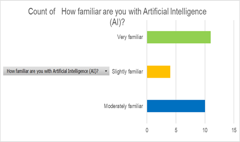

Questionnaire Results
AI in Healthcare
25 people completed the questionnaire.
Graph

Results
- 8 people gave a high rating for AI improving healthcare.
- 11 people had high concerns about patient privacy.
- 1 person gave a high trust rating for AI helping doctors.
- 6 people said a healthcare professional should check AI recommendations.
Safe Use of AI
- Protect patient information.
- Check AI results carefully.
- Test AI systems regularly.
- Doctors should check important decisions.
Conclusion
AI can help healthcare by making tasks faster and improving
patient care. However, AI should be used safely and doctors
should remain involved.
Go Back
Click here to go back to the CAT Phase 3 Home Page